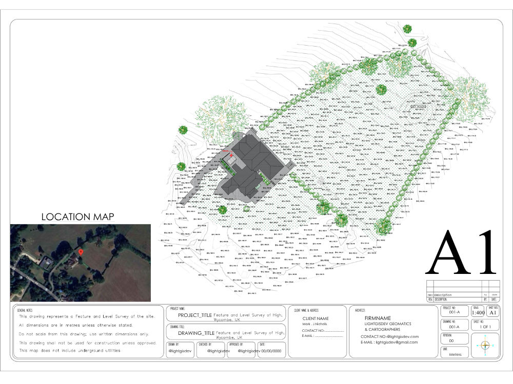
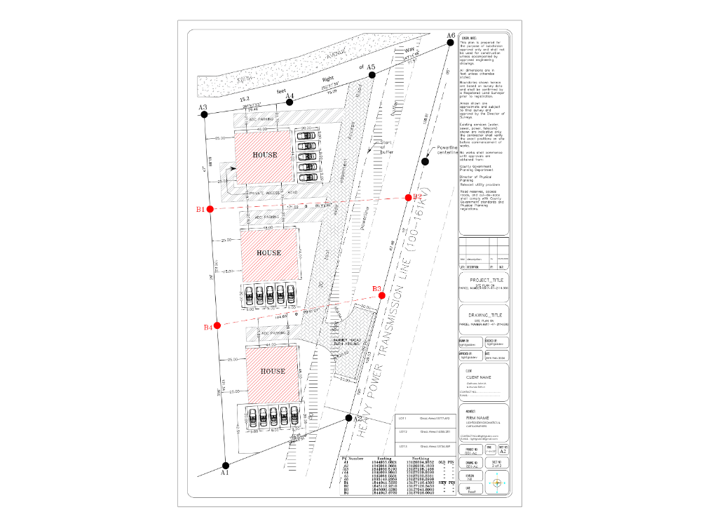
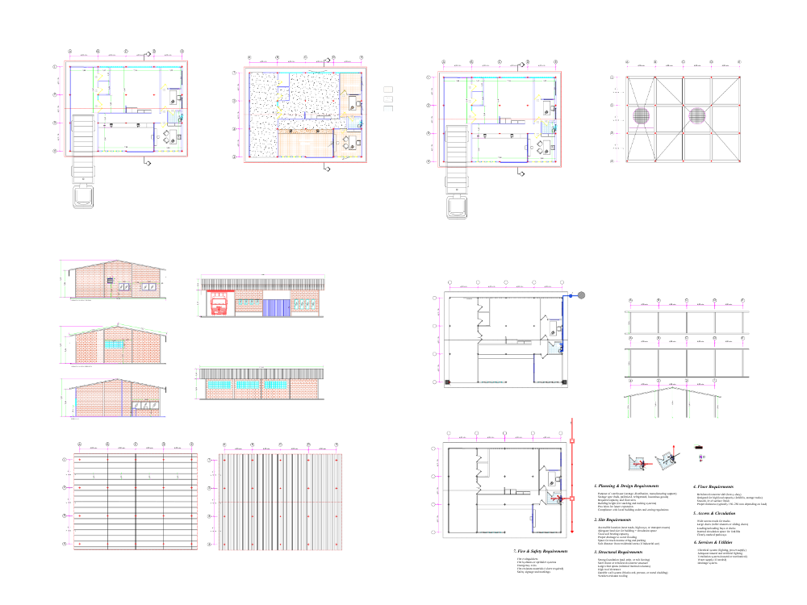
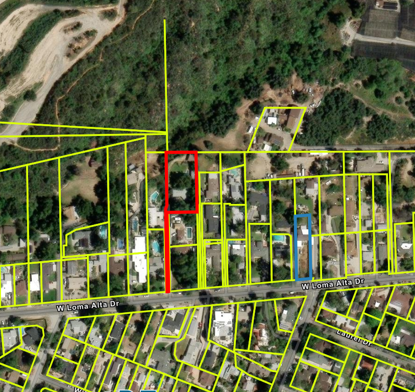
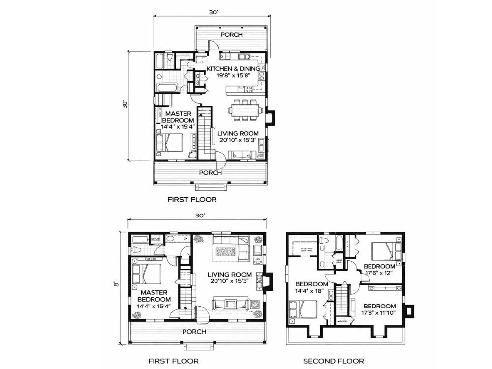

You reduce, we finish
You process your own field data and send linework, a point file or a rough drawing. We take it to a finished, standards-compliant deliverable.
Plats, topographic surveys, ALTA/NSPS sets and as-builts drafted from your field data to your CAD standards, and returned for your seal. You keep the fieldwork, the client and the professional responsibility. We take the drafting queue.
Crews, instruments and scheduling can be resourced predictably. Drafting cannot. When a good month arrives — a subdivision released, a seasonal surge, a client moving from a handful of jobs to dozens — the office becomes the constraint, and the queue between fieldwork completed and invoice issued gets longer.
The usual options are to turn work away, push deadlines, or hire a technician for a peak that may not repeat. GeoHuB is the fourth option: production capacity you can turn up for a busy season and down again afterwards, without a payroll decision attached to it.

Plat preparation and drafting from your field data and record research, with coordinate tables and beacon schedules.
Field data drafted into finished existing-conditions plans — contours, spot levels, drainage, vegetation and built features.
Table A items drafted to the set your client commissioned, ready for your review and certification.
Residential and light commercial as-builts produced at completion.
Plot plans drafted to the municipality's submission requirements, with setbacks and building envelopes checked.
Road, pipeline and utility corridors — cross-sections, longitudinal profiles and earthwork volumes.
Registered scan or UAV data reduced to linework, surfaces and contours in your template.
Legacy plans, scanned deed drawings and inherited CAD files rebuilt, georeferenced and brought onto your standard.
Firms work differently, and all three of these are normal. What matters is agreeing at the outset what arrives, what goes back, and in what format.
You process your own field data and send linework, a point file or a rough drawing. We take it to a finished, standards-compliant deliverable.
Raw downloads come to us and finished drawings go back. Your crew closes out the site visit and the next thing you see is a drawing ready to check and seal.
Routine work stays in-house. We take the surge, the awkward one-offs, or a single subdivision — and step back when the queue clears.
Survey documents are prepared under the responsible charge of a licensed surveyor. Outsourcing the drafting does not change that, and we are explicit about where the line sits.
We do not perform surveying. We do not mobilise crews, make boundary determinations, resolve conflicting evidence, or certify anything. We produce drawings from the field data and instructions your firm supplies. Your surveyor reviews, signs and seals exactly as they would if your own technician had drafted it — the arrangement is no different from employing an unlicensed drafting technician in your office.
This is also why we are straightforward to engage: nothing about the relationship touches your licensure, your insurance or your professional responsibility.
Your title block, your layering, your line weights, your symbology. Drawings come back ready to seal, not ready to reformat — because a drawing you have to rework has not actually saved you anything.
Where a firm has no documented drawing standard, we build one from your existing drawings and issue it back for approval before production starts. That document then governs every drawing we produce, and it is what protects consistency when team members change — on your side or ours.
Routine drawings are typically 24 to 48 hours, confirmed in writing per job before anything starts rather than quoted as an average.
We work from Nairobi on East Africa Time — seven to eight hours ahead of the US Eastern seaboard, and two to three ahead of the UK. Work sent at the end of a US working day is generally back for review the following morning. For UK and European firms, our afternoon overlaps your morning, so questions get answered inside the same working day rather than the next one.





Great work completed, everything done as requested even with a couple of revisions. Couldn't ask for more.
A verbatim review from our public profile, where 43 client reviews can be read in full. See the profile
Send us one job you have already completed in-house. We draft it to your standards and you compare it directly against your own output — on work that is not on the critical path, before anything that is.
Scoped and priced in writing before we start, with no obligation to send anything further. It is the cheapest way to find out whether we are the right fit, and it is how we would want to be tested.
If your question is not here, ask it directly — every enquiry is answered personally, usually the same working day.
Ask your questionNo. We are a drafting and production service.
We do not mobilise crews, make boundary determinations, resolve conflicting evidence, or certify anything. We produce drawings from the field data and instructions your firm supplies, and your licensed surveyor reviews and seals them exactly as they would if your own technician had drafted them.
PNEZD and comma-delimited point files, total station and GNSS raw downloads, LandXML, existing DWG or DXF linework, point clouds in LAS, LAZ, E57 or RCP, scanned record plans, hand-marked field notes and PDFs.
If you already reduce your own field data, send the linework or a rough drawing and we finish it. If you would rather hand over the whole post-field stage, send the raw downloads.
Yes — your title block, layering, line weights and symbology. Drawings come back ready to seal, not ready to reformat.
Where a firm has no documented standard, we build one from your existing drawings and issue it back for approval before production starts. That document then governs everything we produce for you.
Typically 24 to 48 hours for routine drawings, confirmed in writing per job before we start rather than quoted as an average.
We work from Nairobi on East Africa Time, seven to eight hours ahead of the US Eastern seaboard. Work sent at the end of your day is generally back for review the following morning.
Yes. Client data is used only for the project it was supplied for, is not shared with third parties, and is never published as portfolio material without written permission.
We are happy to sign your NDA before you send anything — attach it to your first message. Several of the drawings shown on this page are published precisely because permission was given; the rest of our work is not shown at all.
Send one job you have already completed in-house. We draft it to your standards and you compare it directly against your own output — a like-for-like test on work that is not on the critical path.
Scoped and priced in writing before we start, with no obligation to send anything further.
Send one job and compare the output against your own. Scoped and priced in writing within 24 hours — free, and with no obligation to send a second.
Typically answered the same working day · Nairobi, Kenya (EAT)